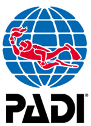

Leer nu Duiken
PADI Duikopleidingen
Activiteiten
Foto Album
Wie zijn wij ?
Contactformulier
Duikschool - Leren Duiken
Wat is DUIKEN??
Ontsnappen naar een andere wereld. Als je duikt met perslucht word je meegevoerd naar een andere wereld met nieuwe kleuren, vormen, structuren, dieren en planten – een wereld waarin de rollen die je vervult – partner, moeder, vader, vriend, vriendin – een nieuwe dimensie krijgen. Word sportduiker en ontsnap naar een vredige plek waar je tot rust komt en je inspiratie kunt opdoen.
Ontdekken van nieuwe plekken. Met perslucht krijg je de vrijheid de onderwaterwereld te ontdekken – van historische scheepswrakken en ongerepte riffen tot de mysteries van de zanduitgraving bij jou in de buurt. Word sportduiker en ontdek wat je hebt gemist!
Ondervinden van een band met de natuur; een gevoel van vrijheid en verandering. Door te duiken krijg je een band met de natuur. Het dompelt je onder in een nieuwe omgeving met nieuwe ervaringen. Het verandert je visie op het leven.
Word duiker en verander jezelf!
Hoe leren DUIKEN??
Als je wilt leren duiken is de PADI Open Water Diver cursus - de populairste duikcursus ter wereld - de beginnerscursus bij uitstek! Dit is jouw ticket voor een levenslang intens avontuur met het duiken en PADI, de belangrijkste en meest toonaangevende duikorganisatie ter wereld.
Waarom de PADI Open Water Diver cursus??
De PADI Open Water Diver cursus is ’s werelds meest gevolgde duikcursus. Het PADI Open Water Diver brevet is het meest gegeerde en herkende duikbrevet in de wereld, en laat je toe met een buddy zelfstandig te gaan duiken.
Het PADI Open Water Diver brevet wordt overal in de wereld geaccepteerd en blijft levenslang geldig!
Tijdens PADI Open Water Diver cursus zal je op een veilige, comfortabele en aangename manier leren duiken, en dit in je eigen taal en op je eigen tempo!
Wat zijn de deelnamevereisten??
Iedereen vanaf 10 jaar kan leren duiken! Bij aanvang van de cursus moet je wel een medische vragenlijst invullen om te kijken of je medisch in orde bent om te duiken. Ben je in behandeling bij een arts of heb je iets gehad wat een mogelijke risico factor kan zijn tijdens het duiken, dien je vooraf een arts te raadplegen. Heb je hierover een vraag, aarzel niet en stel ze ons!
Waaruit bestaat de cursus?? Wat is het lesschema??
De cursus bestaat uit een theoriegedeelte, zwembadlessen en buitenwaterlessen.
5 zwembadsessies (1,5 uur per sessie), deze gaan door op vrijdagavond van 20:30 tot 22:00 in het zwembad De Nekkerpool in het Provinciaal sport en recreatiecentrum De Nekker te Mechelen. Op zaterdagmiddag zijn er lessen in het zwembad "Maanhoevebad", Maanhoeveweg 32 in Sint Katelijne Waver. We verzamelen om 13u45 en de lessen duren tot 17u00. Soms is het mogelijk om 2 sessies te plannen op een zaterdag.
3 theoriesessies (+/- 2,5 uur per sessie), welke op regelmatige basis georganiseerd worden of zelfstudie; Indien je kiest voor zelfstudie aan de hand van het cursusboek en de DVD, dan moet je maar één avond of middag vrij te maken om deel te nemen aan de laatste les en het examen te maken. Je kan ook kiezen voor PADI e-Learning via het internet tegen meerprijs, vraag ons meer info!
4 buitenwaterduiken (+/- 3 uur per sessie), welke georganiseerd worden op zaterdagvoormiddag om 9u00 en op donderdagavond tijdens de zomermaanden vanaf 19u. De buitenwaterduiken gaan door in Provinciaal Sport en Recreatiepark De Nekker (Mechelen). Alle nodige accommodatie is voorzien: we beschikken er over een eigen kleedkamer en douches.
FLEXIBILITEIT en KWALITEIT! Daar gaan we voor!
Als PADI duikcentrum bieden wij de deelnemers een grote flexibiliteit!
Jij bepaald het tempo! Werk je in een ploegensysteem? Woon je iets verder af? Geen probleem! Wij werken niet met vaste cursusschema’s. Jij bepaald zelf wanneer je een les komt volgen en dus ook hoe lang de cursus gaat duren. Snel of in een rustig tempo? Contacteer ons voor jouw persoonlijk cursusschema!
Scuba College staat voor kwaliteit. Wij ontvingen van PADI hiervoor reeds het prestigieuze PADI Excellence Award!
Onze PADI Professionals staan klaar om jou in kleine groepjes (max. 2 a 3 leerlingen per instructeur) alle duikvaardigheden aan te leren. We nemen er ruim onze tijd voor om jou op een veilige en professionele manier te leren duiken. Op die manier zal je vol zelfvertrouwen samen met je buddy de prachtige onderwaterwerleld kunnen gaan verkennen.
Waarom Scuba College??
Scuba College is één van de snelst groeiende duikcentra in België!
We zijn een officiëel door PADI erkend duikcentrum!
Wij ontvingen van PADI reeds een Excellence Award als erkenning van onze PADI opleidingen van de hoogste kwaliteit!
In 2009 hebben wij zelfs het grootste aantal duikers opgeleid in België op beginners niveau!
Een team ervaren en uiterst professionele instructeurs, waaronder 3 Staff Instructors, staan klaar om met U het onderwater avontuur te starten!
Scuba College staat voor Flexibiliteit, kwaliteit en veiligheid!
Cursus kan je elke week starten! Jij bepaald zelf het tempo van de cursus!
Er wordt les gegeven in kleine groepjes, het is bijna een privé opleiding!
Wat is de cursusprijs?? Promoties??
De prijs van deze cursus bedraagt 369,00€. Dit is onze All In prijs!
Alle zwembadsessies, klassikale theorielessen en buitenwatersessies, het gebruik van het nodige duikmateriaal, brevetkosten, PADI cursusboeken bestaande uit een logboek, PADI Open Water Diver cursusboek en DVD zijn inbegrepen.
Start je de cursus met 2 of meerdere personen? Heb je reeds de PADI cursusboeken maar nog geen logboek? Dan betaal je slechts 339,00€.
Schrijf je nu in en wordt gratis lid van de Scuba College Duikclub tot het einde van het kalenderjaar !
DUIKEN IS FUN! START VANDAAG!
Ik wil inschrijven, hoe doe ik dat??
Neem contact met ons op via e-mail info@scubacollege.be of bel ons op 0488/41.11.96.
Je krijgt van ons alle nodige documenten en gegevens om je onderwater avontuur te starten!

RF S-799086